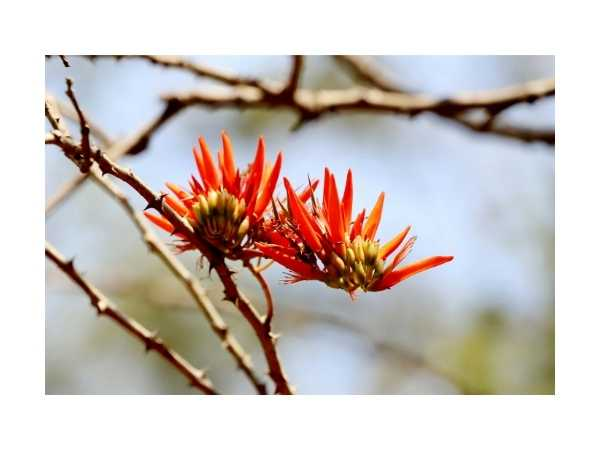

Erythrina variegata
Common Names: Indian Coral Tree, Tiger's Claw, Variegated Coral Tree
Local Name: முருங்கை - கல்யாண முருங்கை (Tamil), Pangara (Hindi)
Family: Fabaceae
Origin: Indian Ocean region, Southeast Asia
Plant Type: Perennial deciduous tree
Average Lifespan: Perennial; long-lived tree
| Growth Habit | Medium to large deciduous tree; spiny trunk and branches |
| Plant Size | 10–20 meters tall |
| Leaves | Trifoliate; large, broad leaflets; variegated forms have yellow-green markings |
| Flowers | Brilliant scarlet-red; large, showy; appear before leaves; attracts sunbirds |
| Root System | Deep taproot; nitrogen-fixing root nodules; improves soil fertility |
| Climate | Tropical to subtropical; tolerates coastal conditions |
| Temperature Range | 15–40°C |
| Soil Type | Well-drained loamy or sandy soil; tolerates poor and coastal soils |
| Soil pH Preference | 6.0–7.5 |
| Sun Requirement | Full sun |
| Water Requirement | Low to moderate; drought-tolerant once established |
| Can it Grow in Pots? | Yes, when young; needs open ground as it matures |
| Fertilizer Schedule | Annual compost; nitrogen-fixing tree requires minimal fertilizer |
| Common Pests | Erythrina gall wasp; stem borers; generally hardy |
| Propagation by Seeds | Seeds germinate readily after scarification; soak overnight before sowing |
| Propagation by Cuttings | Large stem cuttings root easily; traditional method for live fencing |
| Water Usage | Low; drought-tolerant; used as shade tree and windbreak |
| Biodiversity Benefits | Flowers attract sunbirds and bees; nitrogen-fixing; improves soil fertility |
| Anti-inflammatory Properties | Bark and leaves used for joint pain, arthritis, and skin diseases in traditional medicine |
| Immune Support | Used for fever and as an anti-inflammatory in Siddha and Ayurveda |
| Anxiety & Sleep | Bark used for sedative properties; traditionally used for insomnia and anxiety |
Disclaimer: Information provided is for educational purposes only and not a substitute for medical advice.
Add your field observations here.